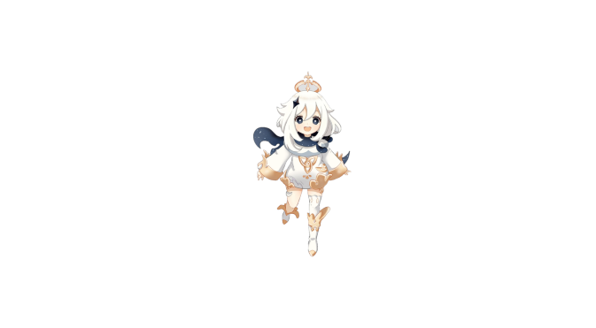
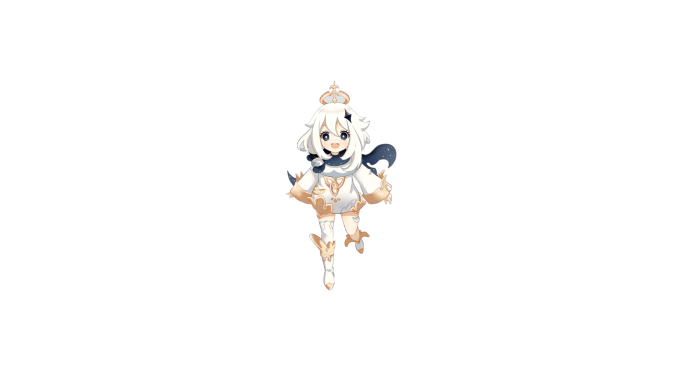
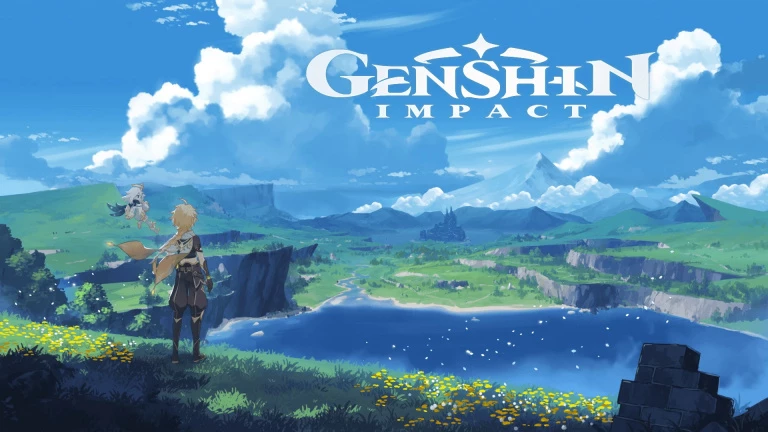
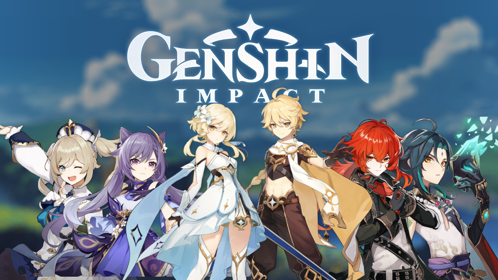

Genshin Impact
 Sortie le 28 septembre 2020 ce jeu cartonne partout
|
Genshin Impact est le premier Action-RPG en monde ouvert développé par miHoYo,
vous incarnez un ou plusieurs personnages. On peut y jouer sur Xbox, Ps4, Pc, Android et IOS. Dans un monde fantastique nommé Teyvat, certains individus choisis par les dieux se sont vu attribuer un Œil Divin, une gemme qui confère à son porteur la capacité de contrôler un des sept éléments. Le joueur commence son aventure en tant que Voyageur ou Voyageuse dont l'origine est inconnue, à la recherche d'un proche disparu. Au cours de l'aventure, le joueur a la possibilité de contrôler plusieurs autres personnages qu'il rencontre lors de son périple, chacun ayant une personnalité unique et des capacités spéciales, alors qu'ils entreprennent des quêtes pour comprendre la vérité sur les dieux primordiaux de ce monde. |
 |
|  |
Genshin Impact comporte 24 personnages, ayant un pouvoirs élémentaire chacun.Les pouvoirs élémentaires sont: Anémo, Pyro, Cryo, Hydro, Electro et Géo. Pour avoir des personnages, il y a un sytème de "voeux", on achete des pierres avec des diamants et on essaye d'avoir des héros. Les Héros ont aussi un système de rareté, c'est-à-dire par exemple un héros 5 etoiles sera beaucoup plus dur à avoir qu'un héros 4 étoiles. |
Ce jeu cartonne partout, sur toute les platesformes, aussi bien en gagnant beaucoup d'argent mais tout aussi sur le point gameplay.